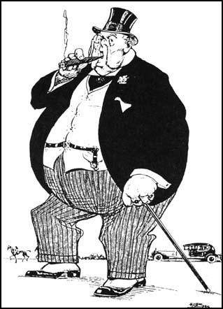

Chapter 9
We often conflate quality with excellence, to the point that the term quality mediocrity seems like an oxymoron, and mediocre quality seems like the same thing as poor quality. But quality and excellence are not the same thing, and mediocrity and quality are not mutually exclusive. Excellence is synonymous with quality only under behavioral regimes governed by an optimizing sensibility, operating on a closed and bounded notion of what the kids these days seem to be calling fitness-to-purpose. What does it map to when you're mediocratizing rather than optimizing? I have an answer: fatness. Or for the kids, fitness-to-purposelessness.

Fatness is the systemic condition created by a mediocre response to abundance. In the opener for this blogchain, I linked to a bunch of my older writing about fat thinking, but I didn't construct a notion of quality out of that attribute. Let's do that now.
The short version: Fatness is embodied abundance. Or if you like clever lines: Fatness is future-fitness.
To see why this is a good definition of quality, consider the difference between optimization and mediocratization (which I covered with a bit of technical detail in part 4). The main difference is that the former solves for a certain finite notion of fitness with respect to a set of known variables of known significance. The latter on the other hand, reserves potential for future dimensions of currently unknown significance.
Fat is reserves against the future, so a quality mediocrity has fat, or better still, quality in mediocrity is fat. Low quality systems can be low quality in three ways: they can be low-fat, high-excellence (a heavily downsized corporation that has managed to lay off/retain the right people), high-fat, low-excellence (fat bureaucracies), or low-fat, low-excellence (the Trump administration, which has struggled both to fill roles, and meet standards of competence in the roles it does fill). High-fat, high-excellence is high quality.
Of course, you have to draw your system boundaries properly. A zero-percent body fat person may be in either a low or high quality body state depending on whether they are starving in the desert, or an athlete in training, with a well-stocked fridge. The former is truly zero-fat in the sense of embodying a low-quality condition. The latter simply stores fat outside their body, in the refrigerator.
Where is the fat stored? is a generally important question to ask about systems. A system with no visible fat storage, or only degenerate/empty ones, is a system on the brink of failure. If it isn't failing, then you drew the system boundary wrong, and missed a structural link to a fat store.
The answer to where is the fat stored is generally a portion of the design space that has the carrying capacity, has the capability to act as a battery of sorts, and is not of critical importance in known behavioral regimes. In the human body, loaded adipose tissue has a role to play in functions like thermal regulation and basic energy storage across the normal feeding cycle, but those needs are easily fulfilled by modest amounts of fat. We aren't camels in the desert. We don't need humps anymore than we need sixpacks. So why is the body capable of embodying such a huge range of fatness? Why does fatness management have to be a culturally learned behavior rather than something regulated by genes?
You can ask the question of any evolved system. Where is the fat? Why? What determines carrying capacity? How is that set or reset? How is it deposited and withdrawn? How liquid is it?
Batteries require design, and their charged state isn't a featureless condition of philosophical potential. It is a tangible physical state. In mathematical terms, "fat" is non-degenerate value bindings in variables that might be degenerate under optimizing conditions. Fat "tissue" in systems besides bodies is typically marked by unnecessary development.
Structurally, systemic fat is marked by adjectives like baroque, overwrought, and busy design. Behaviorally, fat is play. Functionally, fat is underutilization. In all manifestations, structural, behavioral, or functional, fat strikes us as wastefulness amid abundance.
Where an optimizing solution is in some sense a necessary-and-sufficient clean fit-to-purpose that "uses up" available resources, a mediocratizing one seems to revel in unnecessary "extra" development at the expense of further optimization, and "wastes" excess resources. The main functional demands on the system are ignored past a good-enough satisficing level, and the surplus resources are dumped into extravagant overdevelopment elsewhere. But unlike premium mediocrity, which is actually a kind of optimality (with a high weight on signal value), fat mediocrity is not about signaling per se, but about storage, and exploitation of transient abundance via unflattening of degeneracies.
The archetypal human variety of fatness has, at various times and places in history, been associated with wealth, power, and beauty (think Mario Puzo's description of the Mafia prizing "men with belly" as embodiments of power, or Rubens paintings, or fat-is-beautiful culture in Mauritiana). This suggests that fatness is not undifferentiated low-functionality mass-energy, but a pattern of potentiality storage that is not featureless, even though the features may contribute to adaptive fit right now.
Today, the medical consensus appears to be that fatness in humans is a health hazard, but that's a narrow view of even human fatness. Zero percent body fat as an aesthetic is unhealthy too, but that's not my point either. My point is that bodies are capable of fatness far beyond any justification from current fitness considerations, for a reason. That's how they embody the quality of survivability.
That's the resolution of the dissonance between the quality of excellence (fitness to current, known purpose) and quality of fatness (fitness to current purposelessness or future, unknown purposes). Mediocrity, in this sense, strictly subsumes optimality. Mediocrity is satisficing excellence for current purpose plus satisficing fatness towards future purposes. A mediocre-mediocre condition for a system is to be neither as excellent as possible, with zero fat, nor as fat as possible, compromising current function. It is to strike a rough balance between excellence and fatness. Current and future fitness.
When you're optimizing, you have a legible fitness function and a closed and bounded domain over which it is meaningfully defined. To be excellent is to be at some sort of optimum defensible as "global" with respect to a finite modeled environment. To be continuously excellent is to track some continuously evolving notion of excellence, usually under an implied assumption of smooth evolutionary dynamics.
When you're mediocritizing, you have a sense of general levels of illegibility and unmodeled risk and abundance in the environment, and an open and unbounded (the complement of the optimizing domain) domain over which it is meaningfully undefined. To be mediocre is to be fat enough. To be continuously mediocre is to track some continuously evolving notion of abundance, uncertainty and ambiguity, via variation in fat reserves. Stored in opinionated, baroque systemic batteries.
This idea is anathema to a zero-fat culture. When we think of fat at all, we think of it in terms of optimal deployment into investments linked to future growth models and explicitly declared expectations. That's not fatness. Investments are not fatness. Optimized and functionally fit reserve levels against modeled futures is not fatness. That's just contingency planning and earmarking. Fatness is abundance embodied in ballooned degeneracies, not scout-like preparedness. You store today's abundance wherever there's room, and where it's safely out of the way. You don't necessarily try to convert it into treasury bonds or bullets or cash at high cost/conversion losses. You simply "flesh yourself out" in the easiest way possible.
Fatness is unnecessary, playful, overwrought, baroque, overdesigned, over-engineered excess in the current state of a system. There is no "ROI" to fatness. The point of fatness is cheaply purchased illegible insurance against the failure of your current understanding of fitness.
There's a tangent here that I'm not going to explore, namely the aesthetics of the fitness-fatness yin-yang. Depending on the nature of the degeneracies inflated into fullness by fatness, and the cultural and functional context, fatness can appear either beautiful or ugly. Peacock tails are considered beautiful. Fat cats (both human and feline) are considered comical. Traditionally fat farm animals are considered attractive, but factory farmed ones, whose fatness compromises their fitness-to-purpose in their evolutionary niche, appear ugly to us. Fatness in human culture is generally a fashion variable (I have some notes on that in my recent Domestic Cozy installment)
Whether fat is ugly or beautiful is a secondary question to the interesting primary ones: what is fat, where is it, and what purposelessness does it fit?